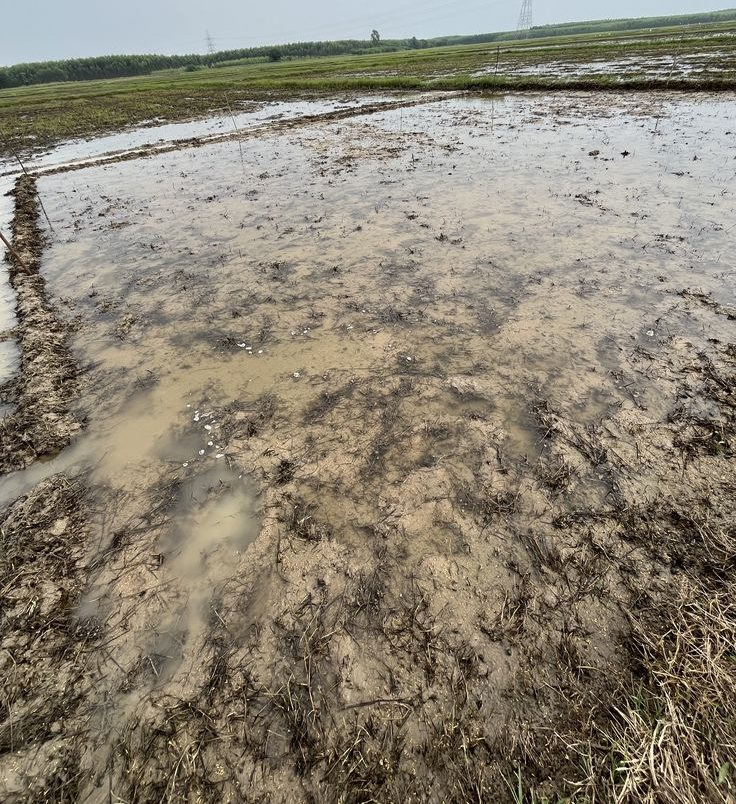

오시는 길
하곡군 하곡읍 둑마루로 41에 있고, 시료 접수 창구는 평일 09:00~17:00에 운영합니다.
창구 시간
- 평일
- 09:00~17:00 · 12:00~13:00 접수 쉼
- 토요일
- 첫째 · 셋째 주 09:00~12:00
- 휴무
- 일요일 · 공휴일 · 둘째 · 넷째 · 다섯째 주 토요일
- 다음 토요일 운영
- 10월 17일 (토) 09:00~12:00

교통 · 주차
- 버스
- 하곡읍 터미널에서 농어촌버스 3번 · 둑마루 정류장 하차 · 걸어서 2분
- 자동차
- 하곡 나들목에서 8 km · 약 12분
- 주차
- 마당 12대 · 1톤 화물차 4대 자리 · 무료
- 우편
- 등기 소포만 받음 · 젖은 흙은 받지 않음
시료 반입
- 양
- 봉지마다 말린 흙 500 g 안팎
- 봉지
- 지퍼 비닐봉지 · 두 겹 · 이름 · 필지 · 작물 · 채취일 적기
- 상태
- 그늘에서 말린 흙 · 돌 · 뿌리 골라냄
- 안 받는 것
- 젖은 흙 · 비료가 섞인 흙 · 거름 더미 흙 · 화분 상토
- 밤 반입함
- 정문 오른쪽 철제 상자 · 다음 날 09:00 접수 처리